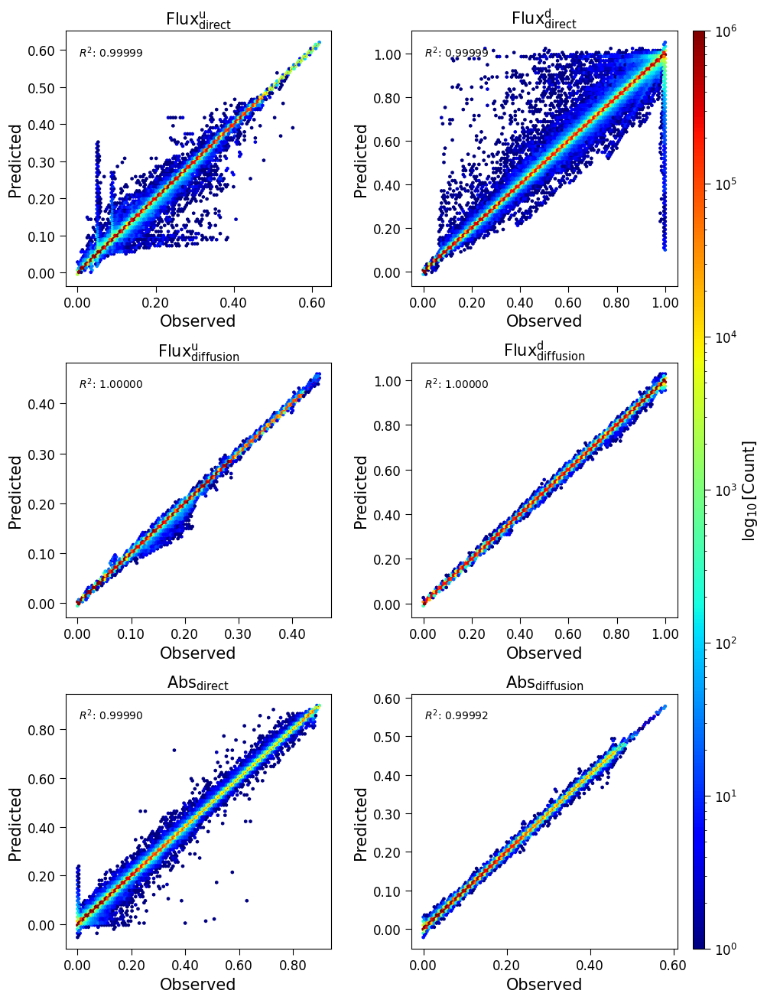
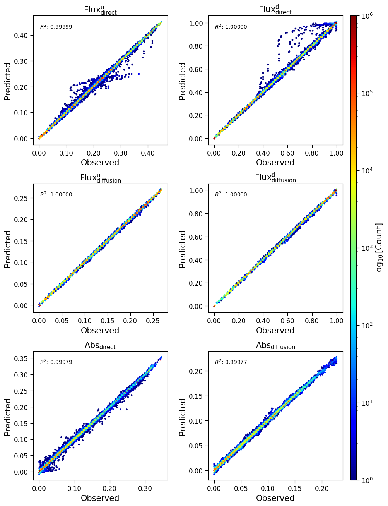
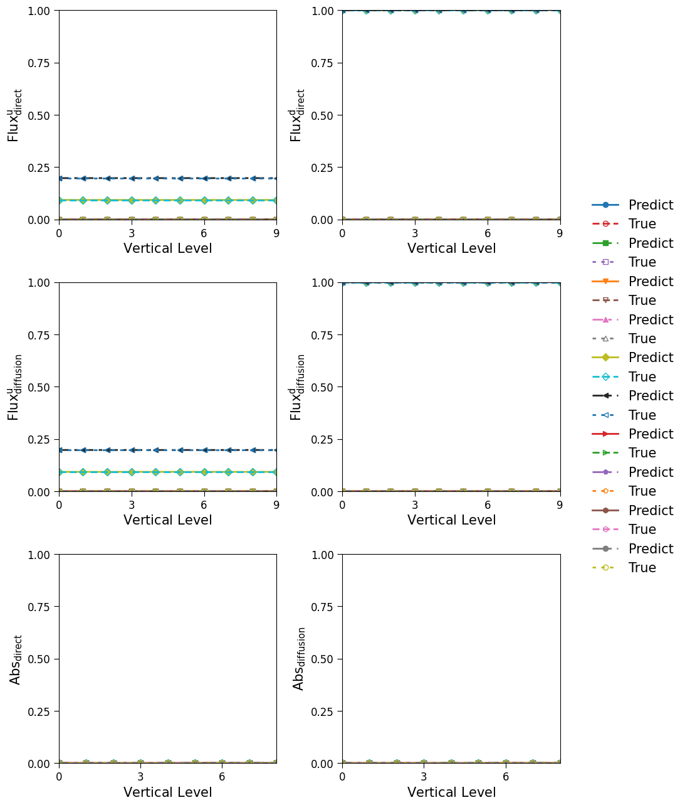
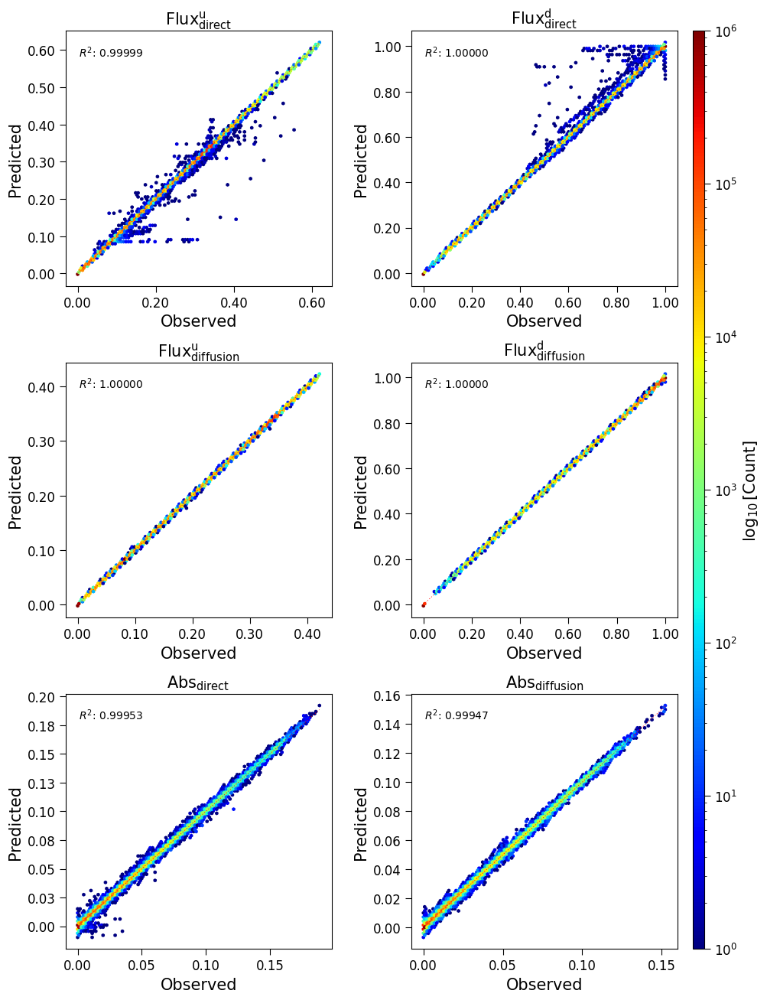
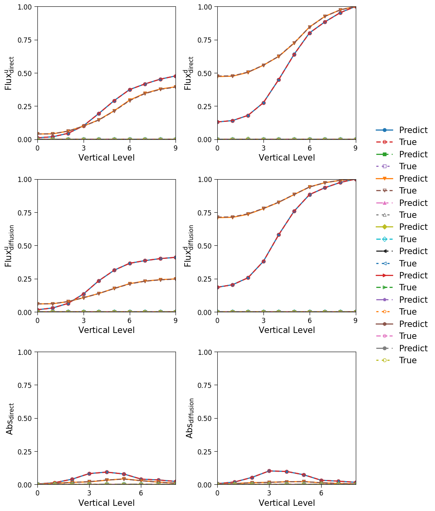

Land surface model benchmark
This section documents the experimental results comparing different neural network architectures for radiative transfer modeling in the RTnn framework.
Model Performance Comparison
This presents a comprehensive comparison of five different neural network architectures trained on the LSM (Land Surface Model) dataset for radiative transfer modeling. All models were trained with identical hyperparameters where applicable to ensure fair comparison.
Experiment Configuration
All models were trained with the following common configuration:
Dataset: LSM (Land Surface Model) data from 1995-2000
Training years: 1995-1999
Testing year: 2000
Input features: 121 channels
Output channels: 120
Sequence length: 10 vertical layers
Normalization: log1p + standard scaling
Loss function: Huber loss (β=0.5, δ=1.0)
Learning rate: 0.0001
Batch size: 4
Epochs: 100
Hidden size: 256
Number of layers: 3
Dropout: 0.1
Model Architectures
Five different architectures were evaluated:
LSTM (Long Short-Term Memory)
Traditional recurrent architecture
Model identifier: lstm_h256_l3_d0d1
GRU (Gated Recurrent Unit)
Simplified recurrent architecture
Model identifier: gru_h256_l3_d0d1
Transformer Encoder
Attention-based architecture with 4 heads
Embedding size: 256
Forward expansion factor: 4
Model identifier: transformer_e256_h4_l3_fe4_d0d1
FCN (Fully Connected Network)
Baseline dense architecture
Model identifier: fcn_h256_l3_d0d1
PINN (Physics-Informed Neural Network)
Hybrid architecture incorporating physical constraints
Model identifier: pinn
Performance Metrics
The following metrics were used for evaluation (validation set):
Loss: Huber loss value
NMAE: Normalized Mean Absolute Error (normalized by target range)
NMSE: Normalized Mean Squared Error (normalized by target variance)
R²: Coefficient of determination
Runtime: Training time per epoch (in seconds)
Quantitative Comparison - Fluxes
Model |
Loss ↓ |
NMAE ↓ |
NMSE ↓ |
R² ↑ |
Runtime (s/epoch) |
|---|---|---|---|---|---|
LSTM |
2.350e-06 |
8.176e-04 |
1.872e-03 |
0.999996 |
268.3 |
GRU |
2.327e-06 |
8.771e-04 |
1.884e-03 |
0.999996 |
266.5 |
Transformer |
4.603e-05 |
4.200e-03 |
8.227e-03 |
0.999925 |
486.8 |
FCN |
6.724e-04 |
2.036e-02 |
3.213e-02 |
0.998865 |
228.9 |
PINN |
1.394e-04 |
8.829e-03 |
1.426e-02 |
0.999775 |
1158.1 |
Note: ↓ indicates lower is better, ↑ indicates higher is better
Quantitative Comparison - Absorption (Channels 1-2)
Model |
NMAE ↓ |
NMSE ↓ |
R² ↑ |
|---|---|---|---|
LSTM |
1.650e-02 |
9.628e-03 |
0.999903 |
GRU |
1.474e-02 |
9.406e-03 |
0.999908 |
Transformer |
6.382e-02 |
4.634e-02 |
0.997756 |
FCN |
2.843e-01 |
2.099e-01 |
0.953906 |
PINN |
1.002e-01 |
5.670e-02 |
0.996629 |
Quantitative Comparison - Absorption (Channels 3-4)
Model |
NMAE ↓ |
NMSE ↓ |
R² ↑ |
|---|---|---|---|
LSTM |
1.692e-02 |
9.453e-03 |
0.999905 |
GRU |
1.485e-02 |
9.126e-03 |
0.999911 |
Transformer |
6.942e-02 |
5.052e-02 |
0.997266 |
FCN |
1.949e-01 |
1.605e-01 |
0.972430 |
PINN |
1.074e-01 |
6.612e-02 |
0.995321 |
Training Performance Comparison
Model |
Train Loss |
Valid Loss |
|---|---|---|
LSTM |
7.149e-07 |
2.350e-06 |
GRU |
7.683e-07 |
2.327e-06 |
Transformer |
1.117e-04 |
4.603e-05 |
FCN |
5.403e-04 |
6.724e-04 |
PINN |
5.878e-05 |
1.394e-04 |
Key Findings
Best Overall Performance for Fluxes: The LSTM and GRU models achieve the highest R² scores (0.999996) and lowest errors for flux predictions across the 10 vertical layers, demonstrating excellent capability in capturing radiative transfer processes.
Best Performance for Absorption: The GRU model shows marginally better performance for absorption predictions, achieving the highest R² values (0.999911 for channels 3-4) and lowest NMAE values.
Runtime Efficiency: The FCN model is the fastest (228.9 s/epoch) but at the cost of significantly lower accuracy. The PINN model is the slowest (1158.1 s/epoch).
Generalization Gap: LSTM and GRU show excellent generalization with minimal gap between training and validation, while Transformer shows the largest gap.
Recommendations
Based on the comparison results across 10 vertical layers:
For maximum accuracy: Use LSTM or GRU models
For balanced performance: Use GRU
For real-time applications: Use FCN as a lightweight baseline
For physics-constrained applications: Use PINN
Diagnostic Visualizations
This section presents diagnostic plots generated at epoch 99 for the LSTM model, showing prediction quality across different Plant Functional Types (PFTs) and spectral bands.
Aggregated Results (All PFTs Combined)
The following figure shows the density scatter plots (hexbin) for all PFTs combined, comparing predicted vs observed values for all four flux components and absorption channels. The diagonal red dashed line represents perfect prediction (y=x), and the R² score is displayed in each panel.

Figure 1: Aggregated validation results for LSTM model at epoch 99. Top row: Direct flux upwelling (left) and downwelling (right). Middle row: Diffusion flux upwelling (left) and downwelling (right). Bottom row: Absorption for direct (left) and diffusion (right) channels. The color scale represents the logarithm of point density.
The aggregated results demonstrate excellent agreement between predictions and observations, with R² values exceeding 0.9999 for all flux components and above 0.9999 for absorption channels.
Per-PFT Results: Example PFT 11
Plant Functional Type 11 shows representative performance across the model. The following figures show both hexbin density plots and line plots for the VIS (Visible) and NIR (Near-Infrared) bands.
VIS Band Results for PFT 11

Figure 2: Hexbin validation results for PFT 11, VIS band. Shows excellent prediction accuracy for this plant functional type in the visible spectral band.

Figure 3: Line plot validation results for PFT 11, VIS band. The figure shows predictions (solid lines) vs targets (dashed lines) across 10 vertical layers for 10 randomly selected samples. Top panels: Direct flux upwelling (left) and downwelling (right). Middle panels: Diffusion flux upwelling (left) and downwelling (right). Bottom panels: Absorption for direct (left) and diffusion (right) channels.
NIR Band Results for PFT 11

Figure 4: Hexbin validation results for PFT 11, NIR band. Demonstrates consistent performance across the near-infrared spectral band.

Figure 5: Line plot validation results for PFT 11, NIR band. The figure shows predictions vs targets across vertical layers, demonstrating accurate capture of vertical profiles for both fluxes and absorption in the NIR band.